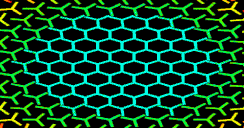
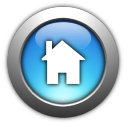

Welcome - You look nice today!
We are stoked to be your buddy
Edit Profile
Login
Logout
Window
Full Screen
Hide All
Set Active Window to Wallpaper
🔉
🔇
Buddy Pond
Source Code
Client SDK
Home Page
0
Buddies Connected
Disconnected
Connection Started:
Packets Sent
Packets Recieved
Last Response Time:
33ms
Average Response Time:
33ms
Select music playlist...
Buddy House 2 ( 10 Tracks )
Buddy House 1 ( 10 Tracks )
Buddy House 0 ( 33 Tracks )
Andrew Potthast: Bangas
Andrew Potthast: Burning Man Set
Featured Buddy: Andrew Potthast
Featured Buddy: ioqpvs
Light Theme
Dark Theme
Nyan Theme
Hacker Theme
Water Theme
Customize Theme

Chat with X
Chat with X